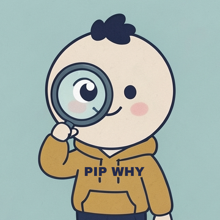

PIP WHY
Everyday "why" questions, answered in 60 seconds.
Why do we remember embarrassing moments that nobody else does? Why do we love the furniture we build ourselves? Each Pip Why short tells one real story, names the idea behind it, and shows the proof from the original research.
Pip Why is an independent channel made by Makara (Chea Sovannmakara) in Cambodia.